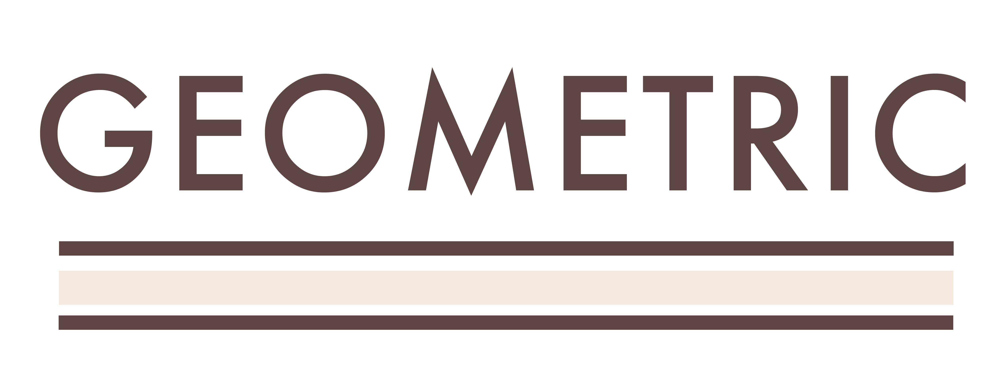

Typography
Consider Shape and It's Effect: Geometric vs. Organic.

Typography is more than choosing a font that looks good. The shape of a typeface can change the personality of an entire design.

While organic typefaces have more variation and can feel handmade or playful. Using shape intentionally can communicate a feeling before someone even reads the words.
Explore ShapeCreating Visual Contrast
Weight is another way typography can create hierarchy and guide the viewer through a design. A bold or heavy typeface naturally draws more attention, while lighter weights can create a quieter visual presence.

“Typography is the art and technique of arranging type.”
— Monica Galvan, The Ultimate Guide To Choosing Fonts